What the competition was, how it is scored, what the ladder looked like, and the tools and measurements that decided our final two agents. For the day-by-day story told from the commit log, read the retrospective.
_S738_LOOK.Each replay shows our farm on the left and the opponent's on the right. The bar below shows the bank gap, green when we lead and brown when we trail, and the line under it is the gap over the whole game. Days 1–26 run fast; the last three days slow down.
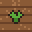
Growing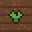
Watered today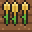
Wheat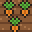
Carrot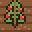
Tomato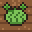
Melon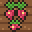
Strawberry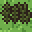
Weed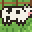
Cow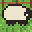
Sheep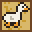
Goose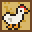
Chicken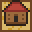
Empty coopEmpty land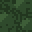
Locked land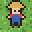
Farmer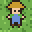
Hired hand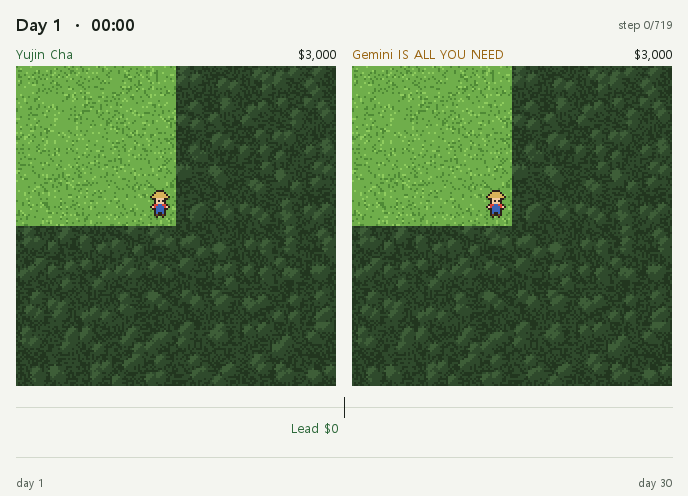
Our hybrid2965 fork against "Gemini IS ALL YOU NEED", ranked 26th on the 30 Sep leaderboard. Same lineage, so the farms mirror each other. We trailed for most of the game, by as much as $408 on day 10, took the lead at 19:00 on day 25 and never gave it back. On the last two days both sides placed the same sell orders.
The Shepherd's Ledger against l1aF of the cha22 lineage, the family that beat our agents most often. We were down $1,791 on day 25 and still $883 behind when the last day began. Within two hours the day-30 sales had turned it into an $18 lead, and we finished $85 ahead.
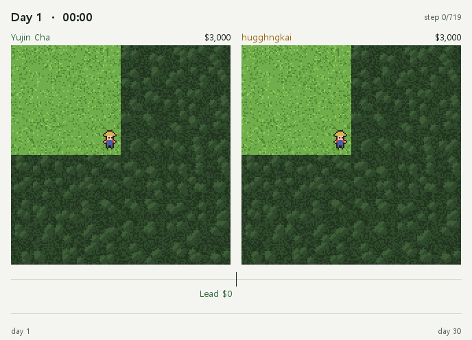
The Shepherd's Ledger against hugghngkai, ranked 158th. We were $2,137 behind on day 24 and went ahead for good at 14:00 on day 29. On the last day every one of the opponent's sales ate into the gap: $479, $311, $151, $71, then $47 at the end.
Two agents run neighbouring farms for 720 turns: 30 days of 24 hours. Each turn they move farmers and hired hands, plant wheat, carrot, tomato, melon and strawberry, keep cows, sheep, geese and chickens, and trade on one market that both farms share. Whoever has more coins in the bank after turn 720 wins. The size of the win does not matter.
kaggle-environments 1.32.7, since 15 Aug. That version changed scarcity pricing for carrot, tomato and egg, so every local match must use it.Almost every strong public agent is a tape agent: a library of recorded 720-turn routes plus reactive layers that adjust sales, herd and hires. Authors fork each other, so the ladder is a set of lineages rather than independent designs. We named lineages by an opening fingerprint. The fingerprint does not depend on the seed but does depend on the opponent, so each agent is fingerprinted against several.
| Lineage | Share of 2450–2850 band | Notes |
|---|---|---|
| hybrid2965 / master-engine | 28.5% | Where our best rating came from |
| a-wonderful-life / cha22 | 27.1% | Ladder versions far stronger than any public copy |
| V52 / V53 | 10.3% | Beats v7 in 93% of games |
| 2945 Farm family | 10.0% | |
| Unnamed | ~23% | Private agents, 1–4 submissions each |
| herd-safe (Shepherd's Ledger, harvest-ledger) | new | Appeared after this window; our final lineage |
Band mix from the community episode dataset, games 19–23 Sep.
Lineages form a rock-paper-scissors cycle: v7 beats hybrid, hybrid beats V53, and V53 beats v7. It reproduced 8/8 each way locally. The top 23 teams in Kaggle's own episode dumps all open differently from every public lineage, so the top of the board runs private agents.
It runs the official interpreter about 20× faster and reproduces ladder games to the coin. Replaying 391 of our ladder games, six opening groups came out exact, including 29 v7 games against six different teams. The misses were against near-forks of the files we had. Without that check, no local number means anything.
Every candidate plays the same seeds from both seats as its baseline. Per-game margin sd is about $9k and outcomes cluster by seed, so 40-game trials "found" gains that reversed at 80. Six seeds is our minimum.
It plays two agents per lineage, weighted by the ladder mix, with walls that a candidate must hold against every agent. It replaced picking by head-to-head wins against one champion, which is how a locally unbeaten v7 went to the ladder and lost 1,000 rating points.
We turn the opponent seat of each of our ladder games into an open-loop tape and replay candidates on that game's seed and seat. The file that actually played gives back the ladder banks exactly (195/195, then 73/73 on new boards). This mattered most, because local copies of some lineages were far weaker than the versions on the ladder: the cha22 family lost every local game to the Shepherd's Ledger but won 72% of 93 real ones. Later we built tapes from other teams' games in the community dataset, 188 boards from 117 teams rated 2300–2399.
Public agents expose dozens of module constants. We screen one change at a time against the same boards, pick on one set, and confirm on boards that played no part in the choice.
A tape repeats what the opponent did and cannot react to us, except through market prices. Absolute win counts are an upper bound. Only the comparison between candidates on the same tapes is reliable.
| Change | Evidence | Result |
|---|---|---|
| 8-knob search on hybrid2965 | 14/16 vs unmodified, then the ladder | 2370 → 2644 |
_V92_P_TOP 2 → 6 (Shepherd's Ledger) | Lineage gauntlet, 6 seeds, both seats | 81.2% → 95.4% |
_V92_P_TOP 6 → 8 | 188 band boards + 69 own boards | no effect |
| harvest-ledger (ttv1) vs Shepherd's Ledger | 188 band boards | 133 vs 118 wins |
Enter tomatoes more readily (_CXTB_MIN_REVENUE 9000 → 6000) | 188 band boards, paired | −16 wins |
Sell ahead of own plan (_S738_LOOK 4 → 10) and _CXTB_MIN_REVENUE 7500 | 340 boards including 152 hold-out | +15 / −0 |
| Split v7's day-27 bulk sales into slices | 12 seeds vs V53 and hybrid | about −1k own score |
Our 2300+ losses were level on money through day 15 and fell behind from day 18, in the selling phase. The stronger farms bought and sold wheat about twice as often, fertilized more, and planted tomatoes on days 15–25 instead of all strawberry. Copying the tomato move made our agent worse, because both farms then sell into one tomato market.
harvest-ledger plus our tuned knobs, _V92_P_TOP = 6.
The same, plus _S738_LOOK = 10 and _CXTB_MIN_REVENUE = 7500.
Tapes ranked the Shepherd's Ledger below ttv1 on every board set, so we gave up lineage diversity for strength.
컴퓨터 프로그램끼리 농장을 운영해서 누가 돈을 더 많이 버는지 겨루는 대회였어요. 이 페이지에는 대회 규칙, 우리가 쓴 방법, 그리고 알게 된 것을 정리했어요. 날짜별 이야기는 회고록에 있어요.
_S738_LOOK왼쪽이 우리 농장, 오른쪽이 상대 농장이에요. 아래 막대는 누가 돈을 얼마나 더 가졌는지 보여 줘요. 초록이면 우리가 앞선 거고, 갈색이면 뒤진 거예요. 그 밑의 선은 게임 전체 동안 돈 차이가 어떻게 바뀌었는지예요. 1~26일은 빠르게, 마지막 3일은 천천히 흘러가요.
우리 hybrid2965 포크와 "Gemini IS ALL YOU NEED"의 경기예요. 이 팀은 9월 30일 순위표에서 26등이에요. 같은 계열이라 두 농장이 거울처럼 닮았어요. 우리는 10일째에 408달러까지 뒤지는 등 거의 내내 끌려갔어요. 그런데 25일째 저녁 7시에 앞서기 시작했고, 끝까지 자리를 내주지 않았어요. 마지막 이틀은 두 팀이 똑같은 판매 주문을 냈어요.
양치기 장부(The Shepherd's Ledger)와 l1aF의 경기예요. l1aF는 우리를 가장 자주 이긴 cha22 계열이에요. 우리는 25일째에 1,791달러까지 뒤졌고, 마지막 날이 시작될 때도 883달러 뒤져 있었어요. 그런데 마지막 날 판매가 시작되고 두 시간 만에 18달러 앞섰고, 85달러 차로 이겼어요.
양치기 장부와 158등 팀 hugghngkai의 경기예요. 24일째에는 2,137달러나 뒤졌는데, 29일째 오후 2시에 앞선 뒤로는 다시 뒤지지 않았어요. 마지막 날에는 상대가 물건을 팔 때마다 차이가 줄었어요. 479달러, 311달러, 151달러, 71달러, 그리고 마지막엔 47달러였어요.
두 에이전트가 이웃한 농장을 하나씩 맡아요. 게임은 720차례(30일 × 24시간)예요. 차례마다 농부와 일꾼을 움직여 밀·당근·토마토·멜론·딸기를 심고, 소·양·거위·닭을 키우고, 두 농장이 같이 쓰는 시장에 팔아요. 마지막에 은행에 돈이 더 많은 쪽이 이겨요. 얼마나 크게 이겼는지는 상관없어요. 1달러 차이도 이긴 거예요.
kaggle-environments 1.32.7 엔진을 써요. 이 버전에서 당근·토마토·달걀 값 계산이 바뀌어서, 연습할 때도 꼭 같은 버전을 써야 해요.잘하는 공개 에이전트는 거의 다 테이프 에이전트예요. 사람들이 서로의 에이전트를 포크해서 고쳐 쓰기 때문에, 래더는 몇 개의 계열로 나뉘어 있어요. 우리는 오프닝 지문으로 계열을 구별했어요. 지문은 시드가 바뀌어도 그대로지만 상대가 바뀌면 달라져서, 에이전트마다 여러 상대와 붙여 보고 지문을 만들었어요.
| 계열 | 2450~2850점 밴드에서 만나는 비율 | 메모 |
|---|---|---|
| hybrid2965 / master-engine | 28.5% | 우리 최고 레이팅이 나온 계열 |
| a-wonderful-life / cha22 | 27.1% | 래더 버전이 공개 복사본보다 훨씬 강해요 |
| V52 / V53 | 10.3% | v7을 93%나 이겨요 |
| 2945 Farm 계열 | 10.0% | |
| 이름 모를 계열 | 약 23% | 공개되지 않은 에이전트들 |
| herd-safe (양치기 장부, harvest-ledger) | 새로 등장 | 이 기간 뒤에 나왔어요. 우리 최종 계열이에요 |
9월 19~23일 경기, 커뮤니티 경기 데이터셋 기준이에요.
계열끼리는 가위바위보처럼 물고 물려요. v7은 hybrid를, hybrid는 V53을, V53은 v7을 이겨요. 1~23등 팀은 공개된 어떤 계열과도 시작이 달라요. 자기만의 비공개 에이전트를 쓴다는 뜻이에요.
대회와 똑같은 게임을 내 컴퓨터에서 20배쯤 빠르게 돌려요. 우리 래더 경기 391판을 다시 돌려 봤더니, 여섯 개 오프닝 그룹은 동전 한 닢까지 똑같이 나왔어요. 이게 맞아야 연습 결과를 믿을 수 있어요.
두 후보를 똑같은 시드에서, 양쪽 자리 모두 둬 보고 비교해요. 한 판 결과는 운 때문에 9천 달러씩 오르내려요. 그래서 40판만 보고 "좋아졌다"고 믿었다가 80판에서 뒤집힌 적도 있어요. 시드는 적어도 6개를 써요.
래더에 실제로 많은 계열들을, 만나는 비율대로 모아 시험을 봐요. 벽인 계열은 꼭 이겨야 통과예요. 예전에는 우리 연습 상대만 이기는 v7을 골랐다가, 래더에서 레이팅 1,000점을 잃었거든요.
가장 중요한 도구였어요. 우리가 실제로 둔 래더 경기에서 상대가 한 행동을 테이프로 만들고, 같은 시드와 자리에서 새 후보와 붙여 봐요. 실제로 냈던 에이전트로 돌리면 결과가 진짜 경기와 똑같이 나와요(195판 중 195판, 새 경기 73판 중 73판). 이게 필요했던 이유가 있어요. cha22 계열의 공개 복사본은 연습에서 양치기 장부에게 전부 졌는데, 진짜 래더에서는 93판 중 72%를 이겼거든요. 나중에는 다른 팀들 경기로도 테이프를 만들었어요. 2300점대 117팀의 188판이에요.
공개 에이전트에는 노브가 수십 개 있어요. 하나씩 바꿔서 같은 경기들로 비교하고, 한 묶음으로 고른 다음, 고를 때 쓰지 않은 홀드아웃 경기로 한 번 더 확인해요.
테이프 상대는 녹화된 대로만 움직여서 우리에게 맞춰 반응하지 않아요(시장 가격만 달라져요). 그래서 이긴 횟수 자체는 실제보다 좋게 나와요. 같은 테이프에서 두 후보 중 누가 더 나은지 비교할 때만 믿을 수 있어요.
| 바꾼 것 | 확인한 방법 | 결과 |
|---|---|---|
| hybrid2965의 노브 8개 찾기 | 원래 버전과 16판 중 14승, 그다음 래더 | 2370 → 2644 |
상대 판매를 미리 따라 파는 개수 _V92_P_TOP 2 → 6 (양치기 장부) | 계열별 게이틀릿, 시드 6개, 양쪽 자리 | 81.2% → 95.4% |
_V92_P_TOP 6 → 8 | 2300점대 188판 + 우리 경기 69판 | 효과 없음 |
| harvest-ledger(ttv1) 대 양치기 장부 | 2300점대 188판 | 133승 대 118승 |
토마토를 더 쉽게 시작하기 (_CXTB_MIN_REVENUE 9000 → 6000) | 188판 짝 비교 | 16판 더 짐 |
내 판매 계획을 더 일찍 당겨 팔기 (_S738_LOOK 4 → 10) + _CXTB_MIN_REVENUE 7500 | 홀드아웃 152판을 포함한 340판 | 15판 더 이기고 0판 더 짐 |
| v7의 27일째 대량 판매를 나눠서 팔기 | V53, hybrid 상대로 시드 12개 | 자기 점수 약 1,000 줄어듦 |
2300점 넘는 팀에게 진 경기들을 살펴보니, 15일째까지는 돈이 비슷하다가 18일째부터 뒤처졌어요. 파는 단계에서 지고 있었던 거예요. 강한 농장들은 밀을 두 배쯤 자주 사고팔고, 비료를 더 많이 쓰고, 15~25일째에 딸기 대신 토마토를 심었어요. 그런데 우리도 토마토를 따라 심게 하자 오히려 더 졌어요. 두 농장이 같은 토마토 시장에 팔면 값이 떨어지기 때문이에요.
harvest-ledger에 우리가 찾은 노브를 넣은 버전이에요. _V92_P_TOP = 6
위와 같고, _S738_LOOK = 10과 _CXTB_MIN_REVENUE = 7500을 더했어요.
테이프 시험에서 양치기 장부는 어느 경기 묶음에서나 ttv1보다 약했어요. 그래서 계열을 다양하게 섞기보다 가장 강한 쪽으로 두 슬롯을 모두 채웠어요. 대신 ttv1이 약한 상대를 만나면 둘 다 약하다는 위험이 있어요.